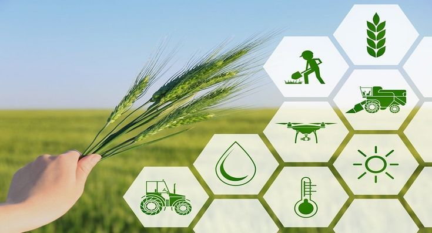
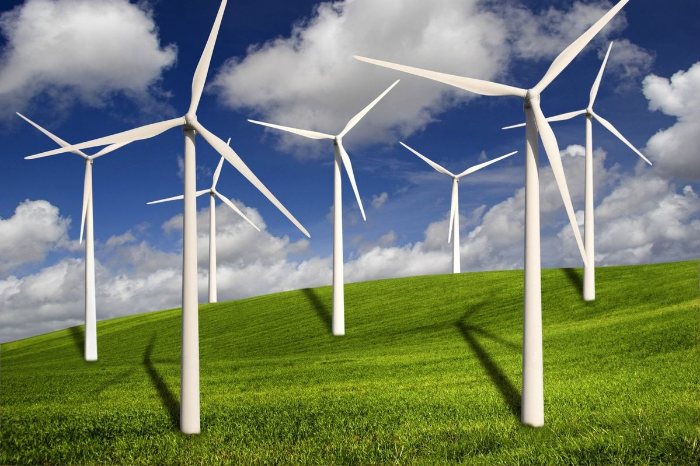
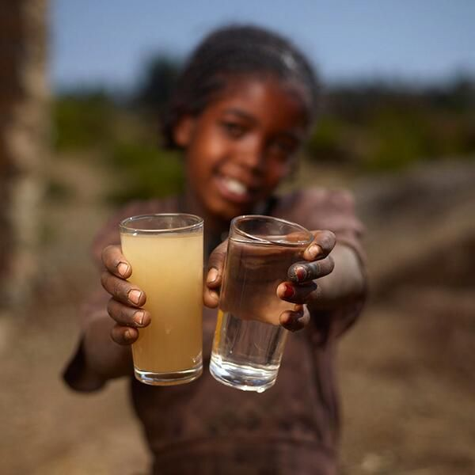
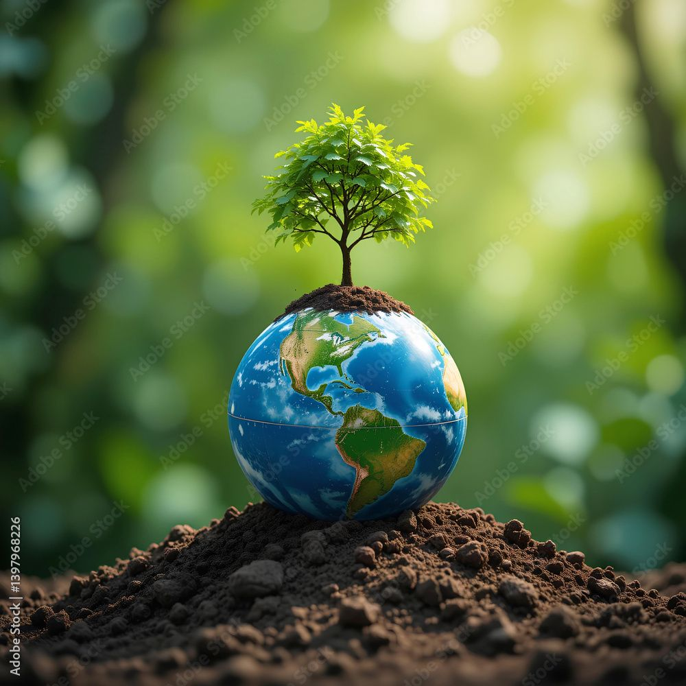
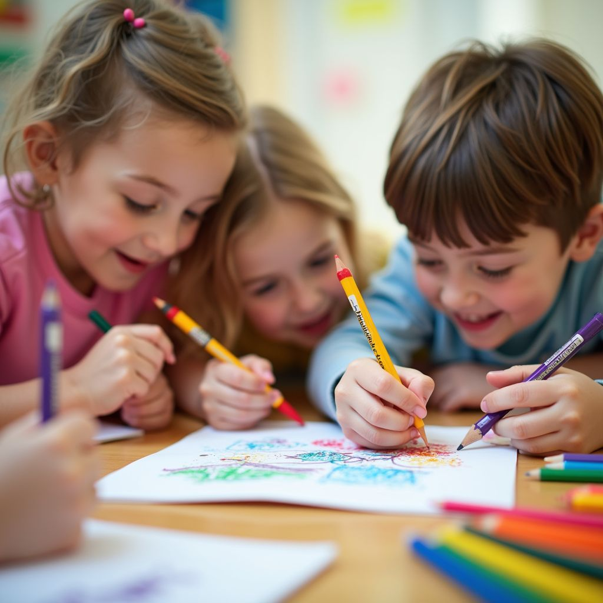
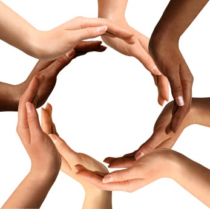

Sustainable Agriculture
Training communities in climate-smart farming, organic agriculture and modern methods to improve food security and income.
Our key focus areas and objectives
Strategic focus areas that drive our mission and create measurable impact.

Training communities in climate-smart farming, organic agriculture and modern methods to improve food security and income.

Promoting solar, biogas and energy-efficient technologies in rural communities.

Clean water projects, school sanitation facilities and sanitary products for girls.

Tree planting, waste management and eco-awareness programs.

Learning materials, school supplies and resources for underprivileged children.

Skills training and resources for women, youth, orphans and children.